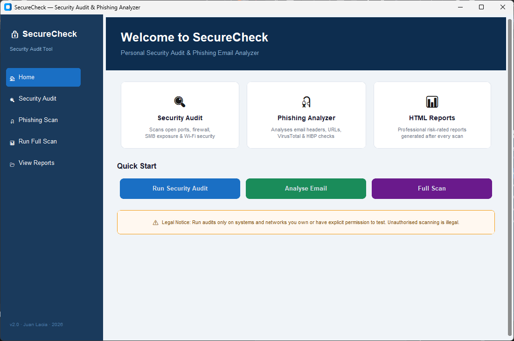
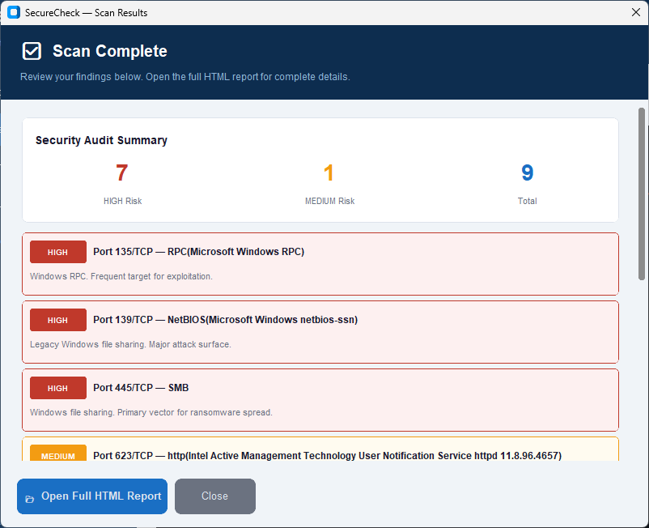

IT Support · Cybersecurity · In Progress
This section is currently being built — deliberately and systematically, not rushed.
Under Construction
My IT background started at Northern Luzon Adventist College — where I studied Information Technology before pursuing remote operations work. That foundation in networking fundamentals, systems administration concepts, and hardware troubleshooting has informed how I approach every operations role since.
Right now I am in the early stages of a deliberate transition into cybersecurity. The word "deliberate" matters here — I'm not chasing a job title. I'm building the actual knowledge base first, because security work done without understanding is more dangerous than no security work at all.
The immediate roadmap is structured and sequenced. The Google Cybersecurity Certificate on Coursera is the current active track — covering foundational concepts in threat detection, network security, incident response, and Linux fundamentals. CompTIA Security+ follows as the first industry-recognised certification milestone. Python basics run in parallel throughout, because you cannot function meaningfully in either cybersecurity or AI without being able to read and write basic scripts.
The longer-term target is a role at the intersection of operations and security — where my existing background in process management, data handling, and high-volume administrative work becomes an asset rather than a liability. Insurance operations, as an industry, handles sensitive policyholder data, financial records, and carrier communications daily. That operational exposure to data handling at volume is directly relevant to how security professionals think about data integrity, access controls, and breach impact.
When this page is complete, it will contain: certification progress and documentation, hands-on project writeups including a Personal Security Audit Dashboard, a Google Sheets Automation and Security Hardening project, and a Phishing Email Analyzer — all feasible on my current hardware. It will also document the longer-horizon OSINT research tool concept I'm developing using Python, n8n orchestration, and the Claude API for reasoning tasks.
This section is not empty because there is nothing to show. It is under construction because what gets built here will be worth showing — and worth defending in front of a technical panel.
Already Completed
This portfolio site is itself a completed foundational IT and development project — not a template, not a website builder, not a drag-and-drop tool. Every element was built deliberately using professional developer tooling and workflows.
HTML5 semantic structure, CSS3 with custom properties and animations, vanilla JavaScript ES6, Bootstrap 5 responsive grid system.
Custom-built Intersection Observer scroll animation system, full lightbox image viewer with keyboard navigation, typewriter animation engine, and back-to-top scroll behaviour — all written from scratch without libraries.
Git version control with meaningful commit history, GitHub repository management, GitHub Pages deployment pipeline, VS Code development environment with integrated terminal.
Formspree contact form API, Google Sheets published iframe embed, PDF fragment identifier parameters, SVG favicon, Open Graph meta tags for social sharing previews.
Mobile-first breakpoint strategy, CSS clamp() for fluid typography, aspect-ratio for proportional containers, flexbox and grid layouts that adapt across all screen sizes.
Systematic identification and resolution of CSS conflicts, Bootstrap breakpoint collisions, Git push rejection errors, PDF iframe cross-browser behaviour, and navbar collapse animation conflicts.
Completed Project
A Python-based security tool combining a personal machine security audit with a phishing email analyzer. Generates a professional HTML report with risk-rated findings. Built from scratch using industry-standard tools and methodologies.
Uses nmap to scan local machine ports 1–1024 with service version detection. Cross-references against a curated database of 20 known dangerous ports — each with risk level and plain-English explanation.
Verifies Windows Firewall status across Domain, Private, and Public profiles. Checks SMB port 445 exposure — the primary ransomware propagation vector. Scans nearby Wi-Fi for WEP and Open security.
Parses raw email text to detect From/Reply-To/Return-Path mismatches. Checks SPF, DKIM, and DMARC authentication header results. Identifies spoofed sender domains and suspicious TLDs.
Extracts all URLs from email body using regex. Checks for raw IP addresses, brand impersonation patterns, URL shorteners, and follows redirect chains to reveal final destinations.
Scans email subject and body for 20+ urgency and fear trigger phrases used in social engineering attacks. Produces a 0–100 risk score with CRITICAL / HIGH / MODERATE / LOW classification.
Generates timestamped HTML reports using Jinja2 templating. Each finding is risk-rated and colour-coded. Reports open automatically in the browser and are print-ready.
Application Screenshots

Home Dashboard
Scan Results PopupAI-Augmented Development
This portfolio was developed using Claude as an AI development partner throughout the entire build — demonstrating practical proficiency in one of the most relevant professional skills of 2026: effective human-AI collaboration in technical workflows.
AI-assisted development is not the same as letting AI do the work. The distinction matters — and it's the distinction that defines whether someone actually understands what they built or just has something that runs.
Throughout this project, Claude generated code, explained every line in detail, and provided technical reasoning for each decision. My role was to direct the architecture, evaluate every output critically, identify failures that the AI didn't catch, report specific error messages and visual bugs back for iteration, make judgment calls on design and structure, and maintain a clear vision of what the site needed to accomplish professionally.
Every piece of code on this site can be explained — not because I copied an explanation, but because the build process was structured around understanding. Before implementing anything, I received an explanation of why it was needed and how it worked. When something failed, I tested it, identified the specific failure, and reported it precisely enough for targeted debugging. That is exactly how AI-augmented professional work functions.
Directing an AI to produce specific technical outputs by providing precise context, constraints, and requirements — rather than vague requests that produce generic results.
Systematically testing AI-generated code against real browser behaviour, identifying discrepancies between expected and actual output, and feeding specific failure information back for correction.
Multiple rounds of implement → test → identify failure → report → fix across every component of the site — navbar collapse conflicts, Git push rejections, CSS breakpoint collisions, image rendering issues, and PDF cross-browser behaviour.
Practical experience with Claude (Anthropic) as a development partner, integrated directly into VS Code via the official extension — demonstrating the kind of AI tooling literacy that modern technical roles increasingly require.
"The ability to work effectively with AI — prompting precisely, evaluating critically, debugging iteratively — is one of the most transferable technical skills available right now. This project demonstrates that capability in a concrete, verifiable way."